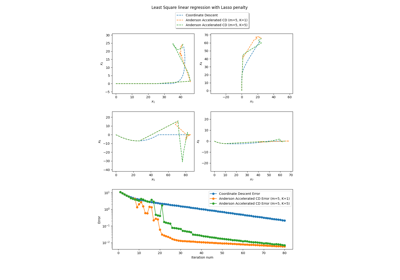

Fixed point resolution

Anderson acceleration in application to Picard–Lindelöf theorem.
Anderson acceleration in application to Picard–Lindelöf theorem.

Anderson acceleration of block coordinate descent.
Anderson acceleration of block coordinate descent.


Deep Equilibrium (DEQ) model in Flax with Anderson acceleration.
Deep Equilibrium (DEQ) model in Flax with Anderson acceleration.